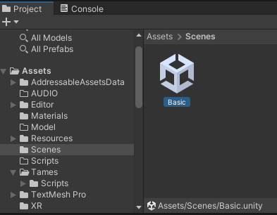

Introduction
Tames Toolkit is Unity toolkit that is intended to facilitate architects’ creation of dynamic, immersive, and interactive visualisation of their works and research. This is a provisional manual for readers to familiarise them with the concept. Both the toolkit and this manual are still in process of developing and there may be inconsistencies and flaws in either or both.
Requirements
For using Tames, you need to have a version of Unity Editor (2021.3.8 and above) installed on your PC (you install an editor through Unity Hub). If you wish to publish your project online (as a WebGL project) you will also need to add the WebGL Module to your Unity installation via Unity Hub.
Tames Toolkit is available in two "pipelines" (that is how the model is rendered). When you download the toolkit from here, you can find them as HDRP and URP. The first one can only be used standalone or with Folly Hub, but you can use the latter for browser-based projects (WebGL).
To use the VR capabilities of Tames, in addition to have a VR-ready PC, you need to install Steam and then install SteamVR from its store. Currently, Tames is tested only with Valve Index headsets.
Creating projects
Once you made sure you have the proper version of Unity, you would only need to copy either Tames folder (HDRP or URP) in your desired location, ideally on a local SSD storage for faster loading and updating. Then change the copied folder's name as you wish (this will be the name of your project). Unless you are well familiar with Unity, do not create a Unity project first; instead open the copied empty HDRP or URP templates as instructed.
After copying the folder, you need to add the project on Unity Hub (there is an Add button on top of the app; in older Hub versions it's called Open). Once added, the project will be shown on the projects list in Unity Hub, where you can open it later. Please also mind that despite the low size of Tames Toolkit, Unity will add around a gigabyte of files to each project when it's opened for the first time.
Important: When the project opens for the first time, it lands you on a temporary created scene. You should open the pre-included scene called Basic. To do this, find the Scenes folder in the Assets folder in the Project panel, and double-click on the Basic scene to open it:
